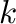
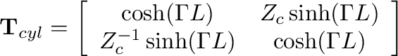
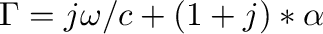
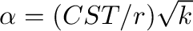
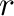
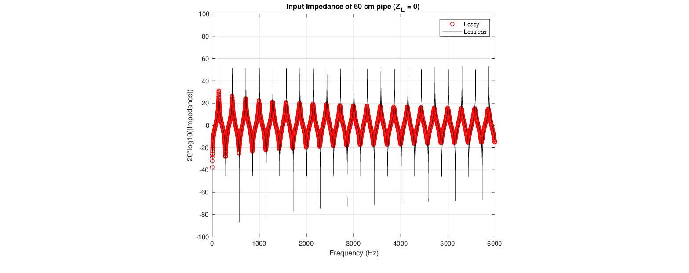

Losses in musical instrument air columns are primarily due to thermal conductivity and viscosity along the walls.
We can account for such losses by replacing the lossless wave number  in the previous expressions with a complex propagation constant as:

(13)
For pipe radii in most musical instruments, a sufficiently accurate value of the propagation constant is
, where
,  is the pipe radius, and is a constant based on the Prandtl number, ratio of specific heats, dynamic viscosity and viscous length parameter (Lefebvre et al., 2013).
Figure 5:
Input impedance magnitude of 60 cm cylindrical segment, , lossy vs. lossless (see example3.m script).

Presented at the 180th Meeting of the Acoustical Society of America, 8-10 June 2021 by Gary P. Scavone.